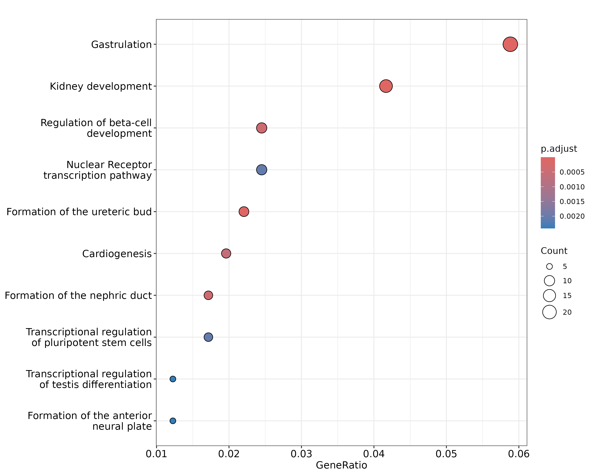

library(ReactomePA)
pathway1 <- enrichPathway(as.data.frame(peakAnno)$geneId)
head(pathway1, 2)
## ID Description GeneRatio BgRatio RichFactor
## R-HSA-9830369 R-HSA-9830369 Kidney development 19/506 46/11214 0.4130435
## R-HSA-9758941 R-HSA-9758941 Gastrulation 27/506 115/11214 0.2347826
## FoldEnrichment zScore pvalue p.adjust qvalue
## R-HSA-9830369 9.153892 12.045870 2.601506e-14 2.796619e-11 2.760335e-11
## R-HSA-9758941 5.203265 9.848629 8.375539e-13 4.501852e-10 4.443444e-10
## geneID
## R-HSA-9830369 2625/5076/7490/652/6495/2303/3975/6928/10736/5455/7849/3237/6092/2122/255743/2296/3400/28514/2138
## R-HSA-9758941 5453/5692/5076/5080/7546/3169/652/5015/2303/5717/3975/2627/5714/344022/7849/5077/2637/7022/8320/7545/6657/4487/51176/2296/28514/2626/64321
## Count
## R-HSA-9830369 19
## R-HSA-9758941 27
gene <- seq2gene(peak, tssRegion = c(-1000, 1000), flankDistance = 3000, TxDb=txdb)
pathway2 <- enrichPathway(gene)
head(pathway2, 2)
## ID Description GeneRatio BgRatio RichFactor
## R-HSA-9830369 R-HSA-9830369 Kidney development 17/415 46/11214 0.3695652
## R-HSA-9758941 R-HSA-9758941 Gastrulation 24/415 115/11214 0.2086957
## FoldEnrichment zScore pvalue p.adjust qvalue
## R-HSA-9830369 9.986276 11.971929 2.162576e-13 2.175552e-10 2.114772e-10
## R-HSA-9758941 5.639309 9.802874 3.528656e-12 1.774914e-09 1.725327e-09
## geneID
## R-HSA-9830369 2625/5076/3227/652/6495/2303/3975/3237/6092/2122/255743/7490/6928/7849/5455/2296/28514
## R-HSA-9758941 5453/5692/5076/7546/3169/652/2303/5717/3975/2627/5714/344022/2637/8320/7545/7020/2626/5080/5015/7849/51176/2296/64321/28514
## Count
## R-HSA-9830369 17
## R-HSA-9758941 24
dotplot(pathway2)5 Functional enrichment analysis
Once we have obtained the annotated nearest genes, we can perform functional enrichment analysis to identify predominant biological themes among these genes by incorporating biological knowledge provided by biological ontologies. For instance, Gene Ontology (GO)(Ashburner et al. 2000) annotates genes to biological processes, molecular functions, and cellular components in a directed acyclic graph structure, Kyoto Encyclopedia of Genes and Genomes (KEGG)(Kanehisa et al. 2004) annotates genes to pathways, Disease Ontology (DO)(Schriml et al. 2011) annotates genes with human disease association, and Reactome(Croft et al. 2013) annotates gene to pathways and reactions.
ChIPseeker also provides a function, seq2gene, for linking genomc regions to genes in a many-to-many mapping. It consider host gene (exon/intron), promoter region and flanking gene from intergenic region that may under control via cis-regulation. This function is designed to link both coding and non-coding genomic regions to coding genes and facilitate functional analysis.
Enrichment analysis is a widely used approach to identify biological themes. I have developed several Bioconductor packages for investigating whether the number of selected genes associated with a particular biological term is larger than expected, including DOSE(Yu et al. 2015) for Disease Ontology, ReactomePA for reactome pathway, clusterProfiler(Yu et al. 2012) for Gene Ontology and KEGG enrichment analysis.

More information can be found in the vignettes of Bioconductor packages DOSE(Yu et al. 2015), ReactomePA, clusterProfiler(Yu et al. 2012), which also provide several methods to visualize enrichment results. The clusterProfiler(Yu et al. 2012) is designed for comparing and visualizing functional profiles among gene clusters, and can directly applied to compare biological themes at GO, DO, KEGG, Reactome perspective.
Ashburner, Michael, Catherine A. Ball, Judith A. Blake, David Botstein, Heather Butler, J. Michael Cherry, Allan P. Davis, et al. 2000. “Gene Ontology: Tool for the Unification of Biology.” Nat Genet 25 (May): 25–29. https://doi.org/10.1038/75556.
Croft, D., A. F. Mundo, R. Haw, M. Milacic, J. Weiser, G. Wu, M. Caudy, et al. 2013. “The Reactome Pathway Knowledgebase.” Nucleic Acids Research 42 (November): D472–77. https://doi.org/10.1093/nar/gkt1102.
Kanehisa, Minoru, Susumu Goto, Shuichi Kawashima, Yasushi Okuno, and Masahiro Hattori. 2004. “The KEGG Resource for Deciphering the Genome.” Nucleic Acids Research 32: D277–80. https://doi.org/10.1093/nar/gkh063.
Schriml, L. M., C. Arze, S. Nadendla, Y.-W. W. Chang, M. Mazaitis, V. Felix, G. Feng, and W. A. Kibbe. 2011. “Disease Ontology: A Backbone for Disease Semantic Integration.” Nucleic Acids Research 40 (November): D940–46. https://doi.org/10.1093/nar/gkr972.
Yu, Guangchuang, Li-Gen Wang, Yanyan Han, and Qing-Yu He. 2012. “clusterProfiler: An r Package for Comparing Biological Themes Among Gene Clusters.” OMICS: A Journal of Integrative Biology 16 (5): 284–87. https://doi.org/10.1089/omi.2011.0118.
Yu, Guangchuang, Li-Gen Wang, Guang-Rong Yan, and Qing-Yu He. 2015. “DOSE: An r/Bioconductor Package for Disease Ontology Semantic and Enrichment Analysis.” Bioinformatics 31 (4): 608–9. https://doi.org/10.1093/bioinformatics/btu684.